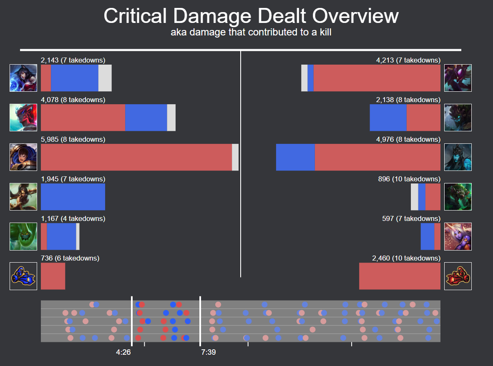
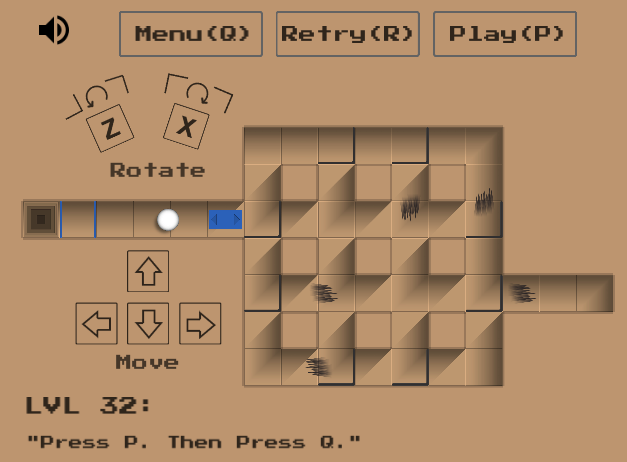
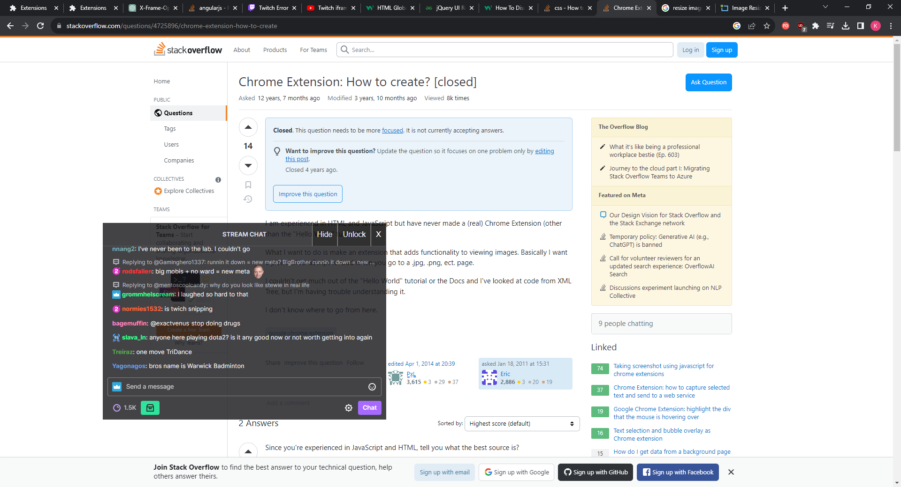

About
I am a second year Masters student in the Department of Computer Science at the University of Colorado Boulder and a graduate researcher in the Collaborative Artificial Intelligence and Robotics lab.
Before that, I spent 4 years as a software engineer at Google, working primarily on the backend of Google Drive. I left Google in late 2022 in order to pursue a Master's degree, with the goal of expanding my Computer Science expertise and deciding if a career in academic teaching is what I wanted to wanted to do. I now know academia is not my planned career path and that I want to work as a software engineer due to the joy I get from interesting and cool software engineering challenges and systems.
My dream job is a software engineer with a strong leadership role within a video game company. I want to combine my love of software engineering, teaching and mentorship, and video games in order to help create awesome things.
Previous Work
Google: Software Engineer III
Aug 2018 - July 2022Key Skills: technical design documents (writing and reviewing), efficient code (mostly java) for handling services with 12m+ queries per second, 24/7 on-call emergency rotation
Competency: rated "exceeds-expectation" or higher for each 6 month review. Received 12 bonuses related to exceptional work or helpfulness.
See more details, including previous software engineering internships on linkedin.
Academics
Teaching
- Lead TA (1000+ students)
CSCI 1300: Introduction to Computing ( C++ ).
University of Colorado Boulder, Fall '23. - TA (800+ students)
CSCI 1300: Introduction to Computing ( C++ ).
University of Colorado Boulder, Spring '22. - TA (600+ students)
CS 2110: Object-Oriented Programming and Data Structures ( Java ).
Cornell University, Fall '16 - Spring '18.
Coursework
- Masters in Computer Science
University of Colorado Boulder, expected May'24.
4.0 GPA - BS in Computer Science
Cornell University, May '18.
3.8 GPA
Publications
I published two first-author papers on the topics of human-robot teaming and reinforcement learning.
-
Matthew B. Luebbers*, Aaquib Tabrez*,
Kyler Ruvane*
, and Bradley Hayes. (2023).
Autonomous Justification for Enabling Explainable Decision Support in Human-Robot Teaming.
Proceedings of Robotics: Science and Systems (RSS 2023). Daegu, South Korea. PDF.
Acceptance Rate: 31%.summary: In search and rescue, human rescuers may act on guidance from robots such as drones. We generalize this scenario and introduce a framework to strategically time when additional justifications should be shown to the human during misaligned expectations. We conduct a study that explores different types of justifications and suggests ways to improve human-robot teamwork by influencing decision-making.
-
Breanne Crockett*,
Kyler Ruvane*
, Matthew B. Luebbers, and Bradley Hayes. (2023).
Effective Human-in-the-loop Control Handover via Confidence-Aware Autonomy.
Proceedings of the Workshop on Life-Long Learning with Human Help (L3H2 2023). London, England, UK. PDF.summary: Autonomous robots can be made safer and more efficient by sporadically including human teleoperation. But when should the robot act autonomously and when should the human take over? We use different RL training "confidence" metrics to learn when the robot should trigger control handover. Human-subject evaluations show autonomously triggered handovers outperform human-initiated ones in navigation tasks.
Personal Projects
Death RecapRecap (view the website)
Technologies: python, d3.js, django, web hosting
Description: A website for visualizing deaths that occur in a game of League of Legends using the Riot Games API. Aggregate damage over specific kills and see who was focusing who throughout the game.

Direkt(play the game)
Technologies: Unity3D, C#
Description: A simple but fun game where you have to get to the square exit and avoid the spike enemies. Rotate gates manually or with triggers to change the flow of the enemies and unlock new areas.

Twitch Chat Anywhere(view the chrome extension)
Technologies: chrome extensions
Description: Embed any twitch chat into any website - show and hide with click of button. Position it, resize it, change its opacity.
